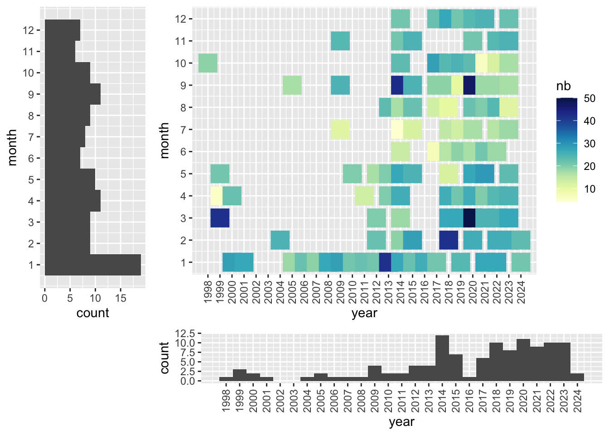

countst <- read_xlsx("../data/water_bird_count_data.xlsx", sheet = "Main", col_types = c("text", "numeric","text", "text", "date", "date", "date", "text","text","text","text","text","text","text","text")) %>%
replace_na(list(quality="", coverage="", method="",water="",weather="",disturbed="", tidal="",participants="",comment=""))
# filter(date<"2021-01-01") %>% # Limit dataset publish to the year 2020
counts <- countst %>%
filter(site=='Mida Creek' ) %>%
full_join(by = c("date", "common_name", "count", "quality", "site", "start_time", "end_time", "coverage", "method", "water", "tidal", "weather", "disturbed", "participants", "comment"),
# Merge count make simultaneously anywhere in Sabaki (North, South or Sabaki)
countst %>%
filter(site=='Sabaki (South)' | site=='Sabaki (North)'| site=='Sabaki') %>%
group_by(date) %>%
mutate(start_time = min(start_time),
end_time = max(end_time)) %>%
group_by(common_name, date) %>%
summarise(count = sum(count),
quality= first(quality),
site = 'Sabaki',
start_time = min(start_time),
end_time = max(end_time),
coverage = first(coverage),
method = first(method),
water = first(water),
tidal = first(tidal),
weather = first(weather),
disturbed = first(disturbed),
participants = first(participants),
comment = first(comment),
.groups = 'drop')
)
species.list <- read_xlsx("../data/water_bird_count_data.xlsx", sheet = "Species")
locations.list <- read_xlsx("../data/water_bird_count_data.xlsx", sheet = "Sites") %>%
filter( site_name=='Sabaki' | site_name=='Mida Creek')
participants.list <- read_xlsx("../data/water_bird_count_data.xlsx", sheet = "Participants")Generate GBIF dataset: metadata, figures and tables
Introduction
This script produces the information for the metadata (figures, tables and key numbers) and generate the events.csv and occurances.csv files in Darwin format for the publication of the waterbird count data of Sabaki and Mida on GBIF (doi).
Load data
The data are entered and stored in a excel spreadsheet alongside all other waterbird counts performed by A Rocha Kenya since 1998. Here, we filter for the counts performed at Mida and Sabaki.
At Sabaki, some counts were performed in two teams on each side of the river (north-south). Here, we sums these counts.
We also load species.list and locations.list from other sheets which contains more information on species and locations than the main counts table.
Basic statistic
We provide a basic description of the dataset with the following table
| site | nbSurvey | nbTaxon | nbObs | nbInd |
|---|---|---|---|---|
| Combined | 257 | 118 | 7644 | 983666 |
| Mida Creek | 121 | 82 | 2534 | 363696 |
| Sabaki | 136 | 109 | 5110 | 619970 |
The total dataset includes: 257 surveys (Mida Creek:121 ; Sabaki:136), 118 taxons recorded (MC:82 ; S:109),7644 sightings (MC:5110 ; S:2534) and 9.83666^{5} individuals (MC:3.63696^{5} ; S:6.1997^{5}).
Quality control
Assessement 1: Unique value per event
Check that there is an unique survey (defined as date+site), meaning that all metadata are the same for all the observations of each surveys.
counts %>%
group_by(date, site) %>%
summarise(
disctinct_starttime = n_distinct(start_time),
disctinct_endtime = n_distinct(end_time),
disctinct_coverage = n_distinct(coverage),
disctinct_method = n_distinct(method),
disctinct_water = n_distinct(water),
disctinct_tidal = n_distinct(tidal),
disctinct_weather = n_distinct(weather),
disctinct_disturbed = n_distinct(disturbed),
disctinct_participants = n_distinct(participants),
disctinct_tidal = n_distinct(tidal)
, .groups = 'drop') %>%
filter(rowSums( .> 1) > 2 )# A tibble: 0 × 11
# ℹ 11 variables: date <dttm>, site <chr>, disctinct_starttime <int>,
# disctinct_endtime <int>, disctinct_coverage <int>, disctinct_method <int>,
# disctinct_water <int>, disctinct_tidal <int>, disctinct_weather <int>,
# disctinct_disturbed <int>, disctinct_participants <int>Assessement 2: Not empty species or count
counts %>% filter(is.na(count))# A tibble: 0 × 15
# ℹ 15 variables: common_name <chr>, count <dbl>, quality <chr>, site <chr>,
# date <dttm>, start_time <dttm>, end_time <dttm>, coverage <chr>,
# method <chr>, water <chr>, tidal <chr>, weather <chr>, disturbed <chr>,
# participants <chr>, comment <chr>counts %>% filter(is.na(common_name))# A tibble: 0 × 15
# ℹ 15 variables: common_name <chr>, count <dbl>, quality <chr>, site <chr>,
# date <dttm>, start_time <dttm>, end_time <dttm>, coverage <chr>,
# method <chr>, water <chr>, tidal <chr>, weather <chr>, disturbed <chr>,
# participants <chr>, comment <chr>Assessement 3: Species validation correct
Check that the name entered have their equivalence in the Specie tab of the spreadsheet. Often, it is a problem of case-sensitive.
counts %>%
group_by(common_name) %>%
summarise(.groups = 'drop') %>%
left_join(species.list, by="common_name") %>%
filter( is.na(scientific_name) )# A tibble: 0 × 7
# ℹ 7 variables: common_name <chr>, sort_2019 <dbl>, scientific_name <chr>,
# family <chr>, family_english <chr>, taxon_rank <chr>, taxon_id <chr>counts %>%
reframe(common_name) %>%
unique() %>%
left_join(species.list, by="common_name") # A tibble: 118 × 7
common_name sort_2019 scientific_name family family_english taxon_rank
<chr> <dbl> <chr> <chr> <chr> <chr>
1 Bar-Tailed Godwit 201 Limosa lapponi… Scolo… Sandpipers an… Species
2 Caspian Tern 264 Hydroprogne ca… Larid… Gulls, Terns … Species
3 Common Greenshank 226 Tringa nebular… Scolo… Sandpipers an… Species
4 Common Ringed Plo… 175 Charadrius hia… Chara… Plovers and L… Species
5 Crab-Plover 234 Dromas ardeola Droma… Crab-plover Species
6 Curlew Sandpiper 210 Calidris ferru… Scolo… Sandpipers an… Species
7 Dimorphic Egret 317. Egretta (garze… Ardei… Herons, Egret… Subspecies
8 Eurasian Curlew 199 Numenius arqua… Scolo… Sandpipers an… Species
9 Greater Sand Plov… 183 Charadrius les… Chara… Plovers and L… Species
10 Grey Plover 174 Pluvialis squa… Chara… Plovers and L… Species
# ℹ 108 more rows
# ℹ 1 more variable: taxon_id <chr>Assessement 5: Unique observation
Check that Species are entered only once for each survey.
counts %>%
group_by(date, site,common_name) %>%
filter(n()>1) %>%
arrange(date)# A tibble: 0 × 15
# Groups: date, site, common_name [0]
# ℹ 15 variables: common_name <chr>, count <dbl>, quality <chr>, site <chr>,
# date <dttm>, start_time <dttm>, end_time <dttm>, coverage <chr>,
# method <chr>, water <chr>, tidal <chr>, weather <chr>, disturbed <chr>,
# participants <chr>, comment <chr>Assessement 5: Manual check of Specie and count
Export pivot table for expert assessment of count
Dataset Description
Geographic coverage
Bounding box:
Taxonomic coverage
species.list.recorded <- counts %>%
group_by(common_name) %>%
summarise(
nbObs = n(),
nbInd = sum(count),
firstObs = min(date),
lastObs = max(date),
.groups = 'drop') %>%
left_join(species.list, by="common_name") %>%
arrange(desc(nbInd))
species.list.recorded %>% datatable()family.list.recorded <- species.list.recorded %>%
group_by(family) %>%
summarise(nbObs=n(),
family_english=first(family_english),
nbSpecies = sum(nbObs),
nbInd = sum(nbInd), .groups = 'drop') %>%
arrange(desc(nbInd))
family.list.recorded %>% head() %>% kable() %>% kable_styling()| family | nbObs | family_english | nbSpecies | nbInd |
|---|---|---|---|---|
| Scolopacidae | 20 | Sandpipers and Allies | 20 | 374721 |
| Charadriidae | 16 | Plovers and Lapwings | 16 | 238403 |
| Laridae | 23 | Gulls, Terns and Skimmers | 23 | 185704 |
| Phoenicopteridae | 2 | Flamingos | 2 | 86453 |
| Dromadidae | 1 | Crab-plover | 1 | 56408 |
| Anatidae | 9 | Ducks and Geese | 9 | 9964 |
# gsub("\"","",family.list.recorded %>%
# transmute(a=paste0('*',family,'* (',family_english,')')) %>% toString())
# family.list.recorded$family_englishThe dataset includes 110 unique species and 8 other taxons (subspecies, family, slash etc.) belonging to 22 families.
Temporal coverage
Temporal range: 1998-10-29 - 2024-02-23
for (s in c('Sabaki','Mida Creek')){
dt <- counts %>%
filter( site==s) %>%
group_by(date) %>%
mutate(month=month(date), year = year(date)) %>%
group_by(month, year) %>%
summarise(nb = n(), .groups="drop")
p1<-ggplot(dt, aes(x = year, y = month, color= nb)) +
geom_point(size = 7, shape=15) +
scale_colour_gradientn(colours = brewer.pal(9, 'YlGnBu')) +
scale_y_continuous(breaks=1:12) +
scale_x_continuous(breaks=min(dt$year):max(dt$year)) +
theme(axis.text.x = element_text(angle = 90, vjust = 0.5, hjust=1))
p3<-ggplot(dt, aes(x=year)) + geom_histogram(bins=length(min(dt$year):max(dt$year))) +
scale_x_continuous(breaks=min(dt$year):max(dt$year)) +
theme(axis.text.x = element_text(angle = 90, vjust = 0.5, hjust=1))
p2<-ggplot(dt, aes(x=month)) + geom_histogram(bins=12) + coord_flip() +
scale_x_continuous(breaks=1:12)
png(paste0("../assets/coverage_",s,".png"), width = 800, height = 400)
grid.arrange(p1,p2,p3,layout_matrix = cbind(c(2,2,2,6), c(1,1,1,3), c(1,1,1,3), c(1,1,1,3)))
dev.off()
grid.arrange(p1,p2,p3,layout_matrix = cbind(c(2,2,2,6), c(1,1,1,3), c(1,1,1,3), c(1,1,1,3)))
}

Content providers
counts$participants %>%
toString() %>%
strsplit(",") %>% unlist() %>% trimws() %>%
unique() %>%
lapply(function(x) participants.list$Name[participants.list$Initial == x]) %>%
unlist() %>% sort() %>%
toString()[1] "Agripina Havai, Ahmed Faraj, Alasdair Lindop, Albert Baya, Alex Mwalim, Alex Siminyu, Amani Kirao, Amani Safari, Ameline Nussbaumer, Amicie Lavault, Amina simba, Andrew Kinzer, Anna Radkovic, Antony Kariuki, Apolloh James, Artur Gijsbertsen, Aurelia Gijsbertsen, Benjamin Suluby, Benson Kadenge, Bonface Mutie, Carlos @@@, Charo Taabu, Chris Halliwell, Christine Pendo Samini, Colin Jackson, Cynthia Adiambo, Daniel Kazungu, David Yekutiel, Dena Elijah, Dickson Thoya, Dixon, Doris Schaule, Doris Schaule, Edwin, Elizabeth Obilo, Emma Mwirigi, Eric Kinoti, Eric Thuranira, Erick Karisa Menza, Erick Kinoti, Ernest Njira, Ester Matingisa, Faith Aboki, Francis Kazungu, Francisca Sprong, Frank, Freshly Tsofa, George Perkin, Harriet Thomasiana, Harry Mjambili, Hassan Shaban Kombo, Hilary Mwachia, Hudson Mkoka, Israel Lemako, Jaap Gijsbertsen, James Boozard, Jan Van Beck, Japhet Amani, Japheth Musil Mwendwa, Jeff Ochieng', Job Aben, John Mansfield, Jonas Flohr, Jonathan Furaha, Jonathan Mangi, Joseph Mangi, Joseph Ojuja, Judith Adhiambo, Juma Badi, Kai Jackson, Kate England, Katie Henderson, Kibwana Ali, Kirao Lennox, Kirao Mwari, Lempiris Leteipa, Lesiamo Leteipa, Lobic Worden, Lucky Baraka, Lucky Kazungu, Lugo Katana, Lydia Kayaa, Lynton Baird, Mangi Joseph, Maria Blunsum, Marissa, Martha Nzisa Mutiso, Martilda Munga, Melisa, Michael Kadenge, Millicent Ndegwa, Mlamba Edson, Mohammed Ali, Monica Njambi, Mustafa Adamjee, Mvera Kirao, Nicholas Warren, Nyale Dadson, Patrick Kaingu, Paul, Paul Mwangi, Pauline Kasungu, Peter Musembi, Peter Ndurya, Queen Elizabeth Hare, Raphaël Nussbaumer, Rehema, Ruth Kerosia, Sadam Pande, Saddam Kailo, Salim Abdallah, Salma Mazrui, Sam Oldland, Sammy Kenga, Samuel Mwen, Sifa Ngonyo, Simon Ikham, Simon Kenga, Sophie Dana, Stacey Wangari, Stanley Thoya Baya, Steve Methu, Tanis Short, Ted Nanninga, Thoya Charo, Timothy mweri"Export in Darwin format
Export Event table
events <- counts %>%
group_by(date, site ) %>%
summarise(start_time = first(start_time),
end_time = first(end_time),
coverage = first(coverage),
method = first(method),
water = first(water),
tidal = first(tidal),
weather = first(weather),
disturbed = first(disturbed),
participants = first(participants),
.groups="drop",
) %>%
left_join(locations.list, by=c("site" = "site_name")) %>%
transmute(
type = "Event",
language = "en",
license = "http://creativecommons.org/publicdomain/zero/1.0/legalcode",
rightsHolder = "A Rocha Kenya",
ownerInstitutionCode = "ARK",
eventID = paste(sep="_", format(date,"%Y%m%d"), if_else(site=='Sabaki', "sabaki", "mida")),
samplingProtocol = 'Water Bird Count',
sampleSizeValue = difftime(end_time, start_time, units = "min"),
sampleSizeUnit = "minutes",
samplingEffort = coverage,
# sampleSizeValue = if_else(site=="Sabaki",3.40,6.06),
# sampleSizeUnit = "square kilometre",
eventDate = format(date,"%Y-%m-%d"),
eventTime = paste0(format(start_time,"%H:%M"),"/",format(end_time,"%H:%M")),
# eventRemarks = "",
locationID = if_else(site=='Sabaki', "sabaki", "mida"),
continent = "Africa",
# waterBody = if_else(site=='Sabaki', "http://www.geonames.org/197853/galana.html", "https://www.geonames.org/186759/mida-creek.html"),
country = "Kenya",
countryCode = "KE",
# stateProvince =" ",
county = "Kilifi",
# municipality = if_else(site=='Sabaki', "Sabaki", "Mida"),
locality = if_else(site=='Sabaki', "Sabaki River Mouth", "Mida Creek"),
#locationRemarks = description,
decimalLatitude = latitude,
decimalLongitude = longitude,
# geodeticDatum ="WGS84",
# footprintWKT = if_else(site=='Sabaki',"POLYGON ((40.1294906 -3.1562848,40.1303489 -3.1575917,40.1319797 -3.1595199,40.1333959 -3.1615125,40.1339323 -3.1633336,40.1359064 -3.1646619,40.1394469 -3.1666116,40.1413138 -3.1699325,40.1402194 -3.1725249,40.1405198 -3.1751601,40.1439531 -3.1781381,40.1459272 -3.1762956,40.1484377 -3.1710251,40.1524717 -3.1611482,40.1489527 -3.1582987,40.1466567 -3.158063,40.1454121 -3.1573882,40.1424188 -3.1545065,40.1388891 -3.1541208,40.1349408 -3.1522033,40.1327843 -3.1529264,40.1335032 -3.1564669,40.1344044 -3.1583844,40.133825 -3.1588772,40.132838 -3.1575274,40.1310784 -3.1552563,40.1294906 -3.1562848))", "POLYGON ((39.9635702 -3.3292204,39.9630981 -3.3312768,39.9632269 -3.333419,39.9617249 -3.3379175,39.9663168 -3.3422017,39.971767 -3.3402738,39.976123 -3.3452649,39.9780434 -3.349517,39.9885738 -3.3435459,39.9846846 -3.3381745,39.9832683 -3.3340188,39.9831825 -3.3328192,39.9836975 -3.3319195,39.9850279 -3.3301201,39.9862724 -3.3288776,39.9878603 -3.3264784,39.9900919 -3.324422,39.9880749 -3.3208231,39.9842983 -3.320866,39.9815517 -3.321123,39.9787622 -3.3212516,39.975844 -3.3218514,39.9724966 -3.3228796,39.9697929 -3.3240364,39.9676901 -3.3256216,39.9654585 -3.3266498,39.9644714 -3.3272068,39.9638277 -3.3283635,39.9635702 -3.3292204))"),
#georeferencedBy = "Raphaël Nussbaumer",
#georeferencedDate = "03/06/2020",
#georeferenceSources = "https://www.geonames.org/ | https://www.google.co.ke/maps/",
#georeferenceVerificationStatus = "verified by curator",
#georeferenceRemarks = "",
dynamicProperties = paste0("{",
'coverage: "',coverage,'", ',
'water: "',water,'", ',
'tidal: "',tidal,'", ',
'weather: "',weather,'", ',
'disturbed: "',disturbed,'", ',
'participants: "',participants,'", ',
'CWAC_sitecode: "',CWAC_reference,'", ',
'IBA_sitecode: "',IBA,'", ',
"}"
),
)
events %>% head() %>% kable() %>% kable_styling()| type | language | license | rightsHolder | ownerInstitutionCode | eventID | samplingProtocol | sampleSizeValue | sampleSizeUnit | samplingEffort | eventDate | eventTime | locationID | continent | country | countryCode | county | locality | decimalLatitude | decimalLongitude | dynamicProperties |
|---|---|---|---|---|---|---|---|---|---|---|---|---|---|---|---|---|---|---|---|---|
| Event | en | http://creativecommons.org/publicdomain/zero/1.0/legalcode | A Rocha Kenya | ARK | 19981029_mida | Water Bird Count | NA mins | minutes | 1998-10-29 | NA/NA | mida | Africa | Kenya | KE | Kilifi | Mida Creek | -3.330189 | 39.96709 | {coverage: "", water: "", tidal: "", weather: "", disturbed: "", participants: "", CWAC_sitecode: "NA", IBA_sitecode: "KE016", } | |
| Event | en | http://creativecommons.org/publicdomain/zero/1.0/legalcode | A Rocha Kenya | ARK | 19990310_mida | Water Bird Count | NA mins | minutes | 1999-03-10 | NA/NA | mida | Africa | Kenya | KE | Kilifi | Mida Creek | -3.330189 | 39.96709 | {coverage: "", water: "", tidal: "", weather: "", disturbed: "", participants: "", CWAC_sitecode: "NA", IBA_sitecode: "KE016", } | |
| Event | en | http://creativecommons.org/publicdomain/zero/1.0/legalcode | A Rocha Kenya | ARK | 19990324_mida | Water Bird Count | NA mins | minutes | 1999-03-24 | NA/NA | mida | Africa | Kenya | KE | Kilifi | Mida Creek | -3.330189 | 39.96709 | {coverage: "", water: "", tidal: "", weather: "", disturbed: "", participants: "", CWAC_sitecode: "NA", IBA_sitecode: "KE016", } | |
| Event | en | http://creativecommons.org/publicdomain/zero/1.0/legalcode | A Rocha Kenya | ARK | 19990408_mida | Water Bird Count | NA mins | minutes | 1999-04-08 | NA/NA | mida | Africa | Kenya | KE | Kilifi | Mida Creek | -3.330189 | 39.96709 | {coverage: "", water: "", tidal: "", weather: "", disturbed: "", participants: "", CWAC_sitecode: "NA", IBA_sitecode: "KE016", } | |
| Event | en | http://creativecommons.org/publicdomain/zero/1.0/legalcode | A Rocha Kenya | ARK | 19990510_mida | Water Bird Count | NA mins | minutes | 1999-05-10 | NA/NA | mida | Africa | Kenya | KE | Kilifi | Mida Creek | -3.330189 | 39.96709 | {coverage: "", water: "", tidal: "", weather: "", disturbed: "", participants: "", CWAC_sitecode: "NA", IBA_sitecode: "KE016", } | |
| Event | en | http://creativecommons.org/publicdomain/zero/1.0/legalcode | A Rocha Kenya | ARK | 20000129_mida | Water Bird Count | NA mins | minutes | 2000-01-29 | NA/NA | mida | Africa | Kenya | KE | Kilifi | Mida Creek | -3.330189 | 39.96709 | {coverage: "", water: "", tidal: "", weather: "", disturbed: "", participants: "", CWAC_sitecode: "NA", IBA_sitecode: "KE016", } |
Export occurance table
occurences <- counts %>%
left_join(species.list, by="common_name") %>%
transmute(
basisOfRecord = "HumanObservation",
eventID = paste(sep="_", format(date,"%Y%m%d"), if_else(site=='Sabaki', "sabaki", "mida")),
occurrenceID = paste(sep="_",eventID, taxon_id),
individualCount = count,
# organismQuantity = count,
# organismQuantityType = "individu",
# occurrenceStatus = "present",
taxonID = taxon_id,
scientificName = scientific_name,
kingdom = "Animalia",
phylum = "Chordata",
class = "Aves",
taxonRank = taxon_rank,
# scientificNameAuthorship = "",
vernacularName = common_name,
occurrenceRemarks = paste0(quality," | ", comment),
)
occurences %>% head() %>% kable() %>% kable_styling()| basisOfRecord | eventID | occurrenceID | individualCount | taxonID | scientificName | kingdom | phylum | class | taxonRank | vernacularName | occurrenceRemarks |
|---|---|---|---|---|---|---|---|---|---|---|---|
| HumanObservation | 19981029_mida | 19981029_mida_batgod | 2 | batgod | Limosa lapponica | Animalia | Chordata | Aves | Species | Bar-Tailed Godwit | | |
| HumanObservation | 19981029_mida | 19981029_mida_caster1 | 1 | caster1 | Hydroprogne caspia | Animalia | Chordata | Aves | Species | Caspian Tern | | |
| HumanObservation | 19981029_mida | 19981029_mida_comgre | 114 | comgre | Tringa nebularia | Animalia | Chordata | Aves | Species | Common Greenshank | | |
| HumanObservation | 19981029_mida | 19981029_mida_corplo | 89 | corplo | Charadrius hiaticula | Animalia | Chordata | Aves | Species | Common Ringed Plover | | |
| HumanObservation | 19981029_mida | 19981029_mida_craplo1 | 560 | craplo1 | Dromas ardeola | Animalia | Chordata | Aves | Species | Crab-Plover | | |
| HumanObservation | 19981029_mida | 19981029_mida_cursan | 600 | cursan | Calidris ferruginea | Animalia | Chordata | Aves | Species | Curlew Sandpiper | | |
Write to Excel
v <- Sys.Date()
write.csv(events, file = paste0("../data/dwc_files/events_",v,".csv"),
na = "", row.names = FALSE, fileEncoding = "UTF-8")
write.csv(occurences, file = paste0("../data/dwc_files/occurences_",v,".csv"),
na = "", row.names = FALSE, fileEncoding = "UTF-8")